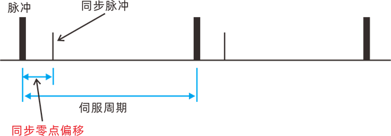

|
类型 |
EtherCAT总线指令 | ||||||||||||||||||||||||
|
描述 |
EtherCAT设备XML文件的部分内容查询。 ZML文件是XML的压缩文件，用于扩展控制器对特定设备的支持。 | ||||||||||||||||||||||||
|
语法 |
函数语法：para = ZML_INFO(infosel, venderid, devid, [version,]) infosel：操作编号
venderid：厂商ID devid：设备ID version：版本号，可选 21-22: 230927以后版本增加支持. 函数语法： para = ZML_INFO(infosel, venderid, devid, [version,]) 命令语法： ZML_INFO(infosel, venderid, devid, [version,]) = para 暂时只支持19模式。请在总线扫描前修改。修改的是同步零点偏移量，示意图如下：  注意：内置XML可能多个设备共一个XML文件，此时修改会多个设备同时变化，venderid、devid可以查询XML文件，也可以扫描后直接?*ETHERCAT查询 | ||||||||||||||||||||||||
|
适用控制器 |
带EtherCAT接口 | ||||||||||||||||||||||||
|
例子 |
>>?ZML_INFO(19, $418108, $9252) 打印：0
Drive_Vender = NODE_INFO(Bus_Slot,i,0) '读取驱动器厂商 Drive_Device = NODE_INFO(Bus_Slot,i,1) '取设备编号 ZML_INFO(19, Drive_Vender,Drive_Device)=500000 '扫描前修改刷新周期 SYSTEM_ZSET = SYSTEM_ZSET OR 128 SLOT_SCAN(Bus_Slot) LOCAL LOCAL_zmlinfo,LOCAL_nodeinfo LOCAL_zmlinfo=ZML_INFO(19, Drive_Vender,Drive_Device) LOCAL_nodeinfo=NODE_INFO(0,0,19) IF LOCAL_zmlinfo = LOCAL_nodeinfo THEN ?"XML写入成功" ELSE ?"XML写入失败" ENDIF | ||||||||||||||||||||||||
|
相关指令 |